k-Day 056｜出門在外
天亮了。順利活下來真是太好了。
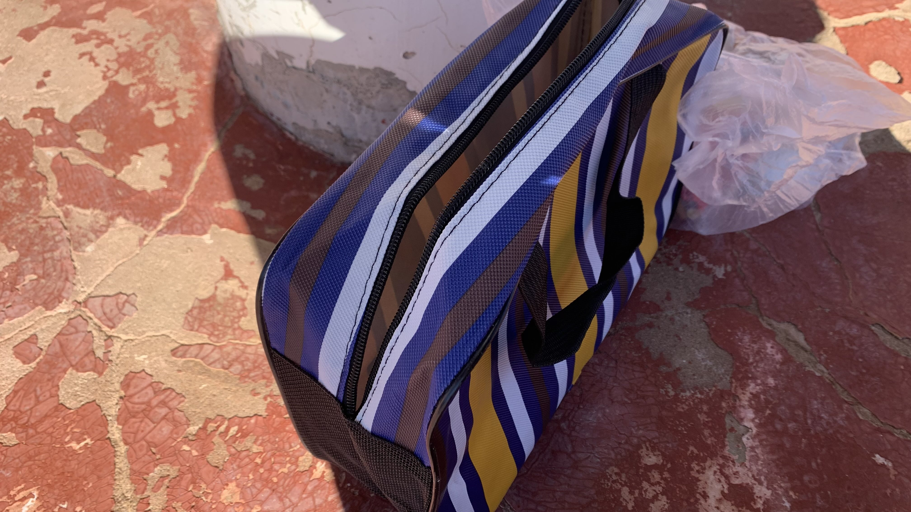
昨晚餓得受不了，天一亮就開始煮泡麵吃零食。收拾裝備時剛買的帆布袋拉鍊就斷了，實在不經用，只好把他丟到垃圾桶。
今天要騎到60公里外的昌圖錫力服務區，膝蓋仍有些腫脹，昨晚過於緊張沒睡好，全身僵硬。
看了下Windy，今日風速不大，不至於晃動車身。
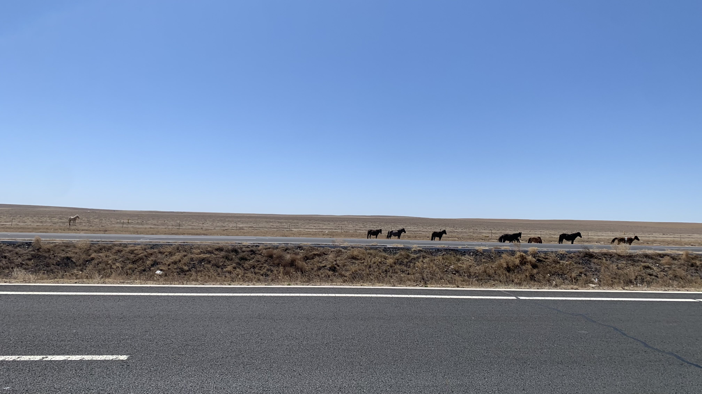
出發不久看到八匹馬，最左邊有一匹白色的站得很遠。
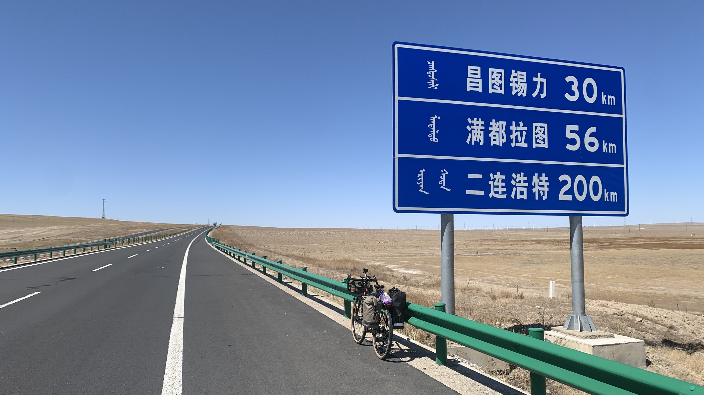
由於四周已無遮蔽，新策略是看到路標就躲在下方讓膝蓋休息。
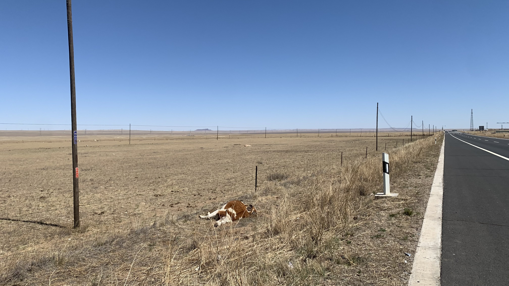
在路邊看到一頭倒臥的牛，遠遠地還不確定生死，仔細一看，身體裡的內臟和肉都已經被吃光，只剩下軀殼還沒腐化。
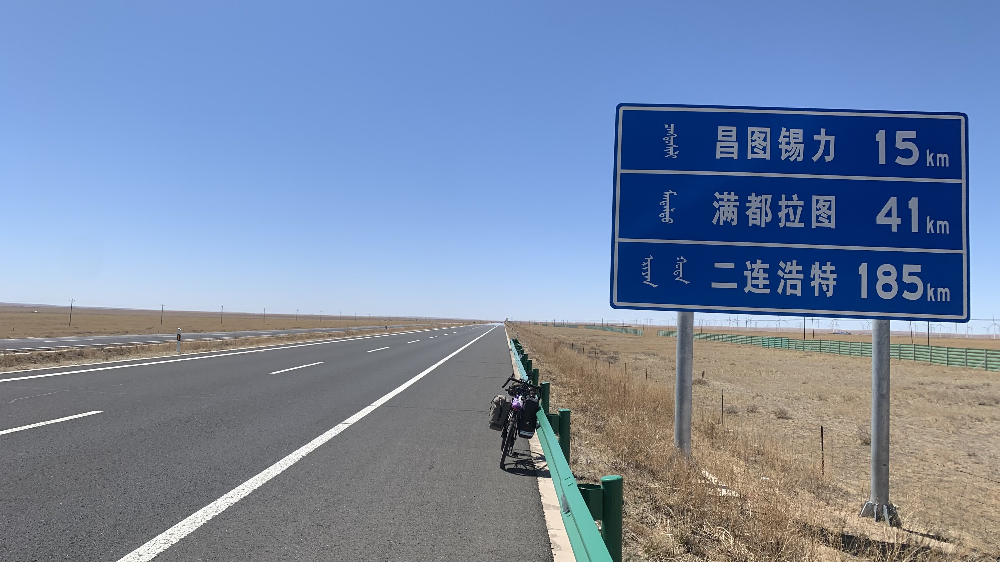
比起上下坡，草原上最重要的地形應該是風速與風向。只是因為風小了一點就可以騎的如此輕鬆自然，難怪前幾天膝蓋會痛成那樣。
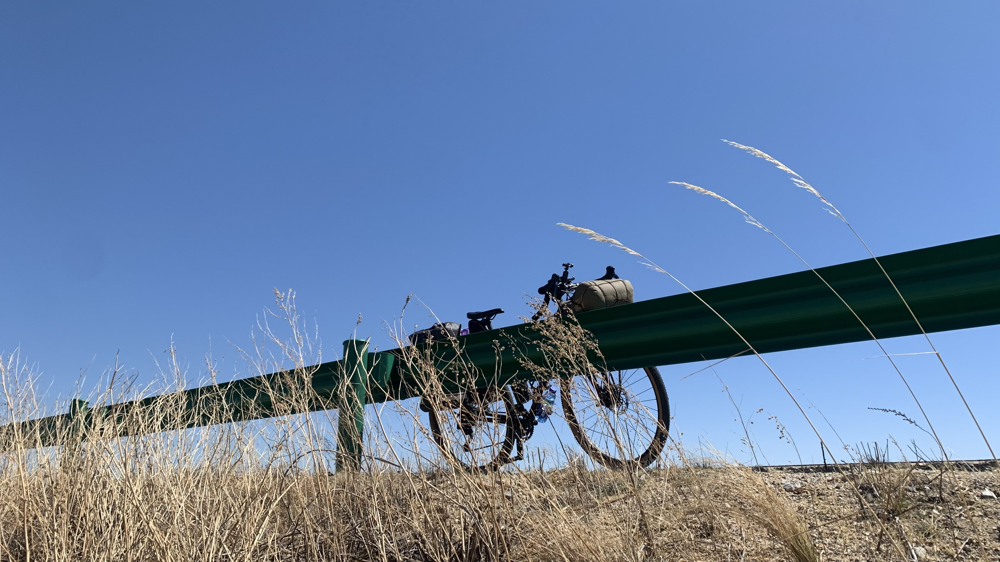
「這場景真好！」蹲在草叢中上廁所，看著上方的二十三號，心裡這麼想著。
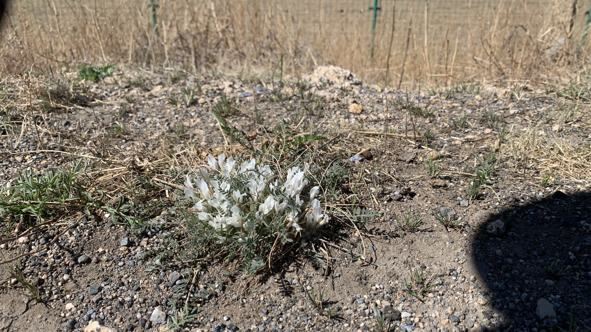
明顯感受到天氣在回暖，路邊開了白色的沒見過的花。
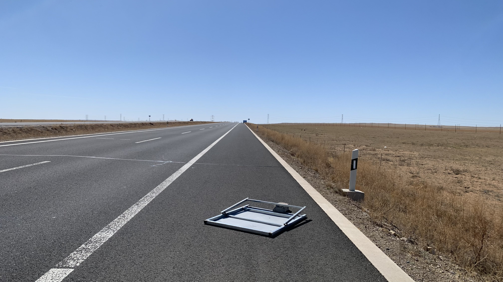
今天倒在路上的東西有點多，那麼小的石頭在風中自然是壓不住鐵板的。
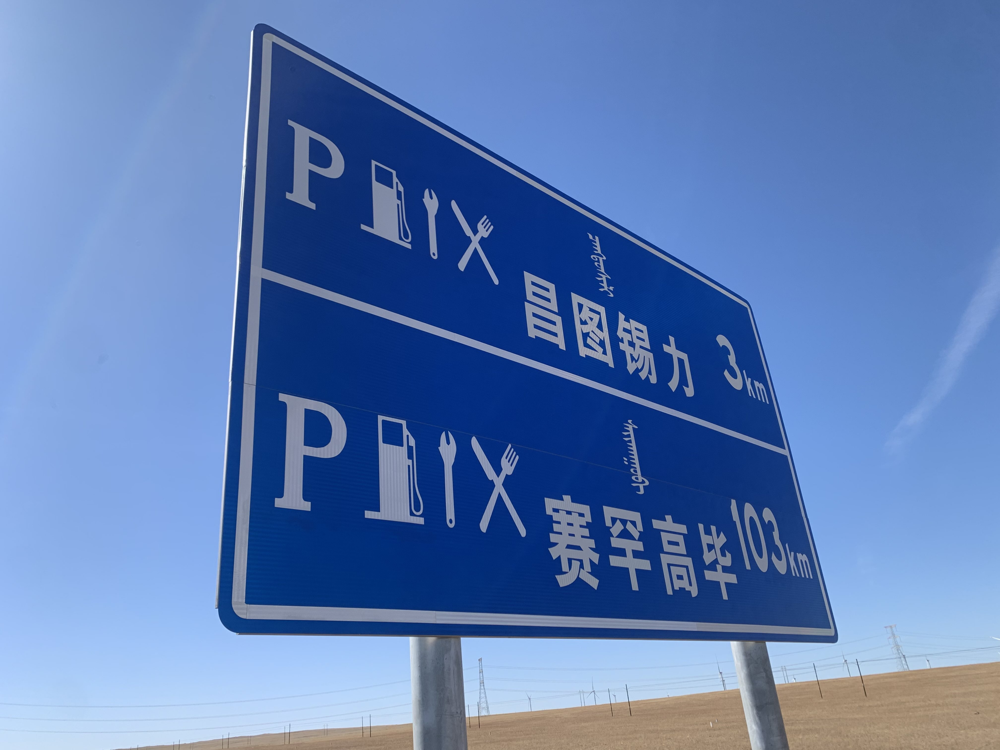
在膝蓋開始疼痛之際，看到服務區的牌子。只剩三公里了。
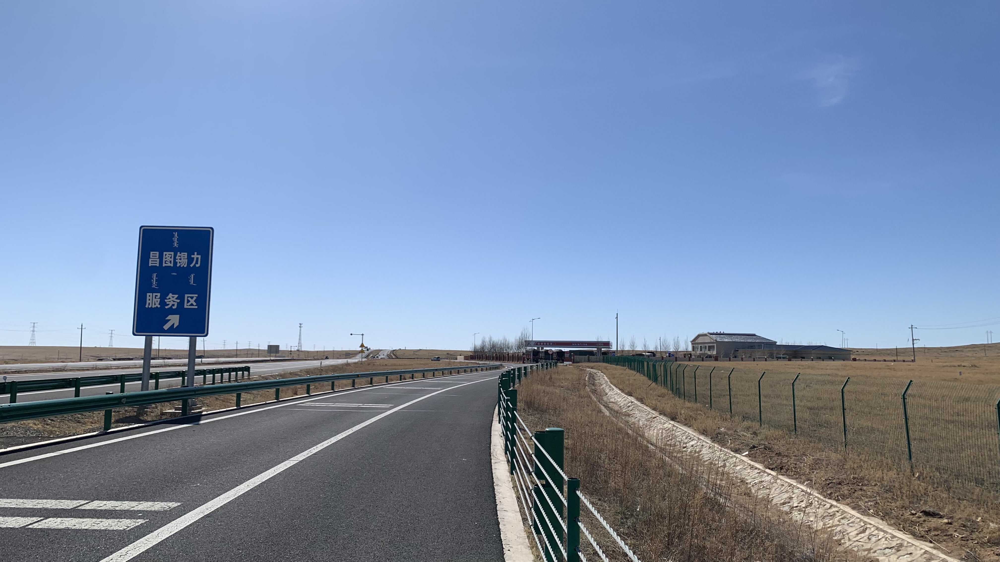
下午四點前順利抵達。
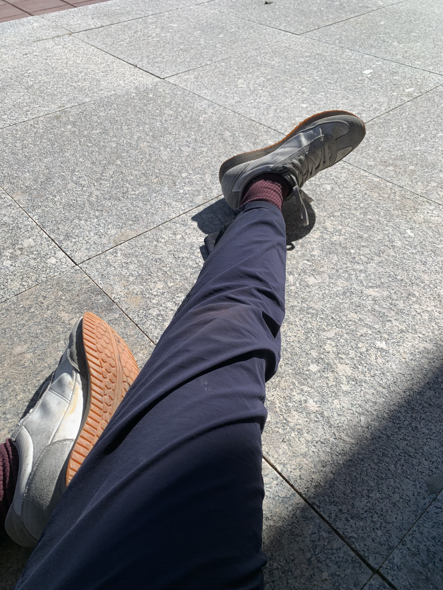
整棟建築只有廁所是開放的，坐在上鎖的門前遮陽，把膝蓋伸出去享受柔和日光的溫度。
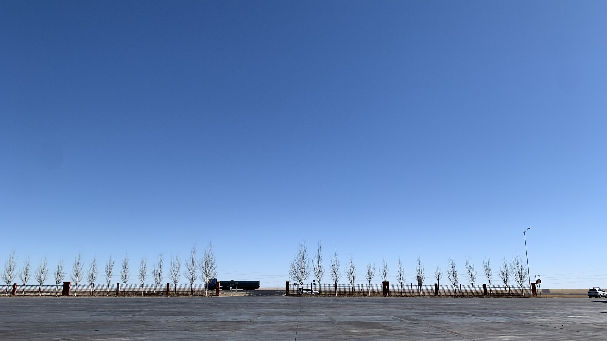
下午四點半，卡車司機們搬了小凳子小桌子圍著吃飯，面前有個剛來的重機大叔從車箱拿出一瓶大瓶裝百事可樂在我面前暢飲。
掏出食物袋，裡面有一根小士力架、一包泡麵、一小包堅果、蛋白粉和一小包阿華田。目測還有1.4公升的水，要撐到明天進蘇旗，不能奢侈煮泡麵。
可樂大叔坐到我旁邊，看他相當無聊就和他聊起來。大叔是蒙族，今日喜提新車，騎著Suzuki重機正準備回家，家就在我要去的方向，15公里外的舊蘇旗。詢問那裡有無住處，大叔說沒有，如果膝蓋痛的話住這裡比較好。
「在這旁邊搭帳篷，警察會不會來趕人？」大叔堅定的說「不會。我們內蒙沒有這樣的。」看來前面住旅店的錢是白花了。
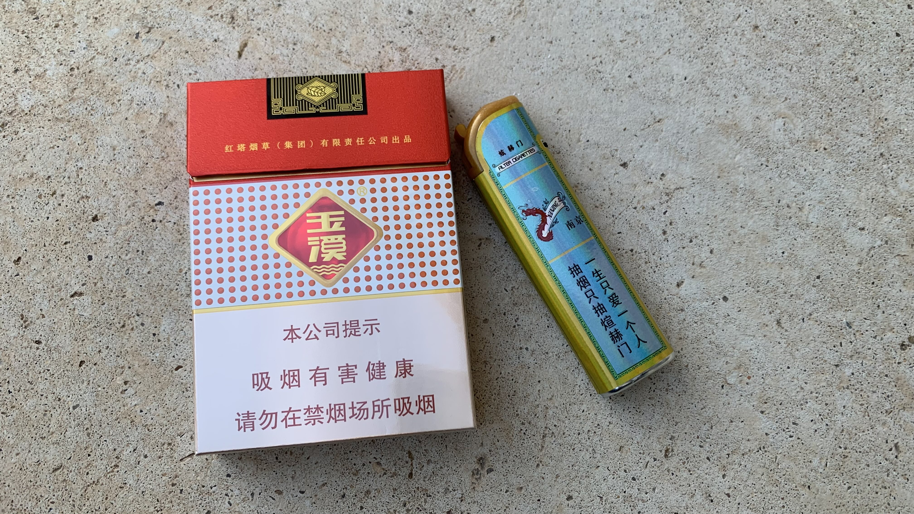
臨走前大叔把自己的煙和防風打火機給我，跟我說「沒事！出門在外！」看來贈煙是某種情誼的表示。
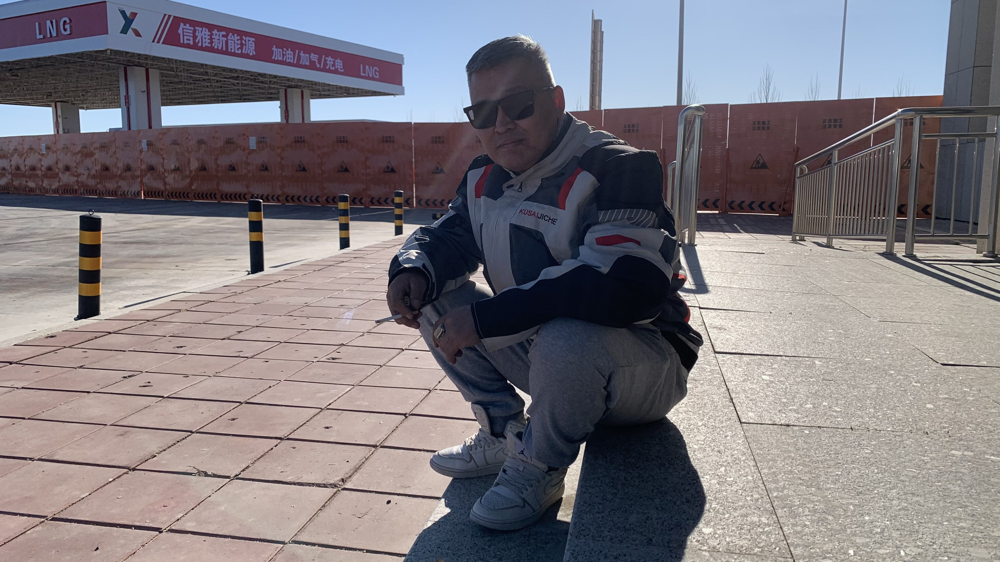
跟大叔說，我幫你拍張照吧，他立刻擺好姿勢。拍完照後安靜地坐了一下，就踏著白色高筒airjordan騎著黑色Suzuki走了。
此時天還很亮，於是走進廁所觀望，沒想到裡面隱藏著小賣部和熱水機。
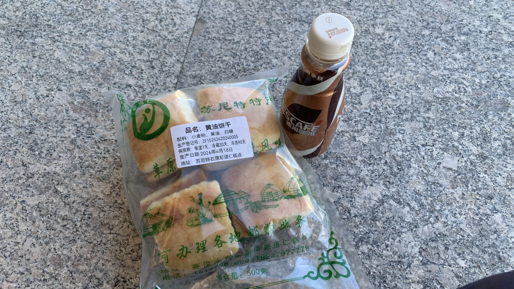
先買了當地特色的黃油餅和一瓶咖啡。開口詢問小賣部大叔可否讓我在外面扎營。大叔想都沒想說：「你有帳篷就可以。」難道我在威海和大連得到的資訊是假的嗎？
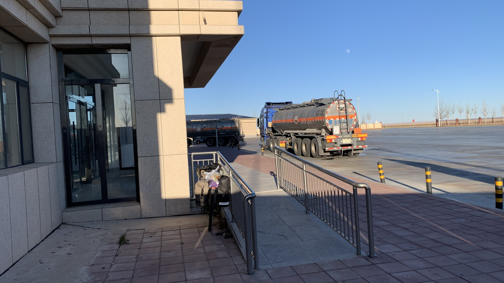
帶著食物和水走到休息站角落，此處三面遮風，把二十三號靠在扶手上可以阻隔來往路人的視線，簡直五星度假區。
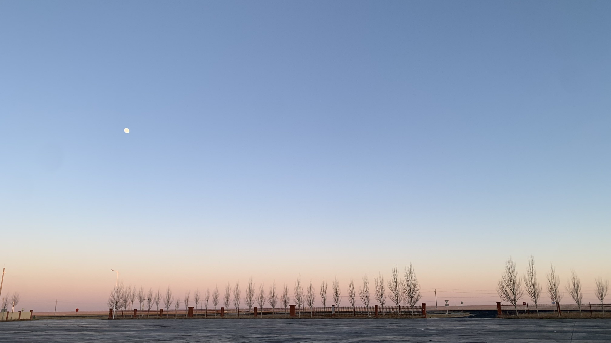
看來今晚能睡個好覺。
今日花費： 咖啡零食 17元